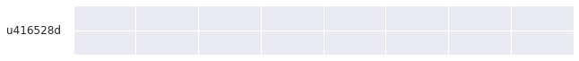
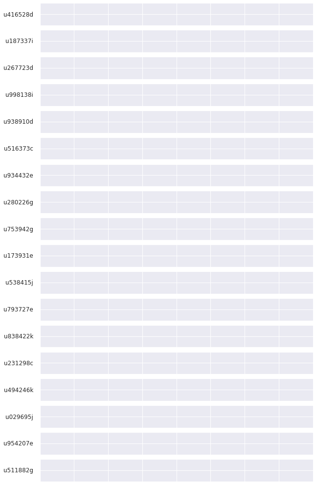
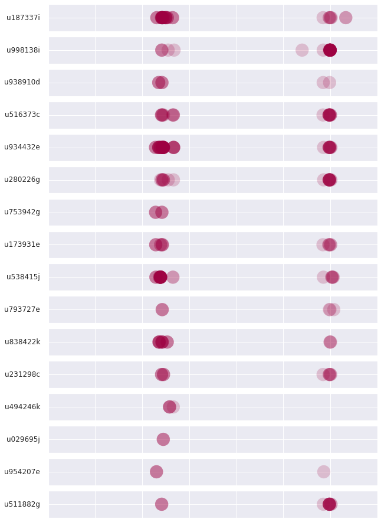

# initialization for my classroom
import os
from datetime import datetime as dt
def logfile(user=os.environ.get('JUPYTERHUB_USER') or 'jovyan'):
prefix='/srv'
if os.path.isdir(prefix) and os.access(prefix, os.W_OK):
prefix+=('/'+user)
if not os.path.isdir(prefix):
os.makedirs(prefix)
else:
prefix='.'
return prefix+'/'+dt.now().strftime('%Y%m%d')+'.log'
#return prefix+'/'+'20220426'+'.log'
import pandas as pd
import numpy as np
import re
ansi_escape = re.compile(r'\x1B(?:[@-Z\\-_]|\[[0-?]*[ -/]*[@-~])')
def activity(user=os.environ.get('JUPYTERHUB_USER') or 'jovyan'):
df = pd.DataFrame()
try:
with open(logfile(user), 'r') as f:
for line in f:
try:
d = dt.strptime(line, "# %a, %d %b %Y %H:%M:%S ")
df_new = pd.DataFrame([[1.,1.,1.]], columns = ["y","exc","area"],index=[pd.Timestamp(d)])
df = pd.concat([df,pd.DataFrame(df_new)])
except:
pass
except:
pass
try:
with open(logfile(user).replace('.log','-exc.log'), 'r') as f:
for line in f:
try:
#print(ansi_escape.sub('', line))
d = dt.strptime(ansi_escape.sub('', line), "%Y-%m-%d %H:%M:%S,%f "+user+" ")
df_new = pd.DataFrame([[1.,0.,5.]], columns = ["y","exc","area"],index=[pd.Timestamp(d)])
df = pd.concat([df,pd.DataFrame(df_new)])
except:
pass
except:
pass
return df
import matplotlib.pyplot as plt
import seaborn as sns
sns.set()
def plot_ax(ax, user=os.environ.get('JUPYTERHUB_USER') or 'jovyan'):
data = activity(user).sort_index()
if len(data)>0:
cmap = plt.cm.Spectral
ax.scatter(
x=data.index, y=data['y'].values,
c=data['exc'].values, s=data['area'].values*500,
cmap='Spectral',
alpha=0.2, edgecolor='none'
)
ax.set_ylabel(user, rotation=0, ha="right", va="center")
from datetime import date
from datetime import time
fig = plt.figure(figsize=(10,1))
ax = fig.add_subplot(1,1,1)
plt.setp(ax, xlim=(pd.Timestamp(dt.combine(date.today(),time(dt.now().hour-1,))),
pd.Timestamp(dt.combine(date.today(),time(dt.now().hour,59,59)))))
plt.setp(ax, ylim=(0,2))
plt.setp(ax, xticklabels=[])
plt.setp(ax, yticklabels=[])
plot_ax(ax)

ids='''
u416528d
u187337i
u267723d
u998138i
u938910d
u516373c
u934432e
u280226g
u753942g
u173931e
u538415j
u793727e
u838422k
u231298c
u494246k
u029695j
u954207e
u511882g
'''
users=ids.strip().splitlines()
fig, axes = plt.subplots(len(users),1,figsize=(10,len(users)))
plt.setp(axes, xlim=(pd.Timestamp(dt.combine(date.today(),time(dt.now().hour-1,))),
pd.Timestamp(dt.combine(date.today(),time(dt.now().hour,59,59)))))
plt.setp(axes, ylim=(0,2))
plt.setp(axes, xticklabels=[])
plt.setp(axes, yticklabels=[])
for i in range(len(users)):
#print(users[i])
plot_ax(axes[i], users[i])
#display.display(plt.gcf())

import datetime
time(dt.now().hour,59,59)
pd.Timestamp(dt.combine(t_date,t_stime)), pd.Timestamp(dt.combine(t_date,t_etime))
(Timestamp('2022-04-26 16:30:00'), Timestamp('2022-04-26 18:30:00'))
2022/04/26#
ids='''
u187337i
u998138i
u938910d
u516373c
u934432e
u280226g
u753942g
u173931e
u538415j
u793727e
u838422k
u231298c
u494246k
u029695j
u954207e
u511882g
'''
users=ids.strip().splitlines()
fig, axes = plt.subplots(len(users),1,figsize=(10,len(users)))
t_date=datetime.date(2022,4,26)
t_stime=datetime.time(16, 45)
t_etime=datetime.time(18, 30)
plt.setp(axes, xlim=(pd.Timestamp(dt.combine(t_date,t_stime)),
pd.Timestamp(dt.combine(t_date,t_etime))))
plt.setp(axes, ylim=(0,2))
plt.setp(axes, xticklabels=[])
plt.setp(axes, yticklabels=[])
for i in range(len(users)):
#print(users[i])
plot_ax(axes[i], users[i])
#display.display(plt.gcf())
2022/04/19#
ids='''
u187337i
u998138i
u938910d
u516373c
u934432e
u280226g
u753942g
u173931e
u538415j
u793727e
u838422k
u231298c
u494246k
u029695j
u954207e
u511882g
'''
users=ids.strip().splitlines()
fig, axes = plt.subplots(len(users),1,figsize=(10,len(users)))
t_date=datetime.date(2022,4,19)
t_stime=datetime.time(16, 45)
t_etime=datetime.time(18, 30)
plt.setp(axes, xlim=(pd.Timestamp(dt.combine(t_date,t_stime)),
pd.Timestamp(dt.combine(t_date,t_etime))))
plt.setp(axes, ylim=(0,2))
plt.setp(axes, xticklabels=[])
plt.setp(axes, yticklabels=[])
for i in range(len(users)):
#print(users[i])
plot_ax(axes[i], users[i])
#display.display(plt.gcf())
